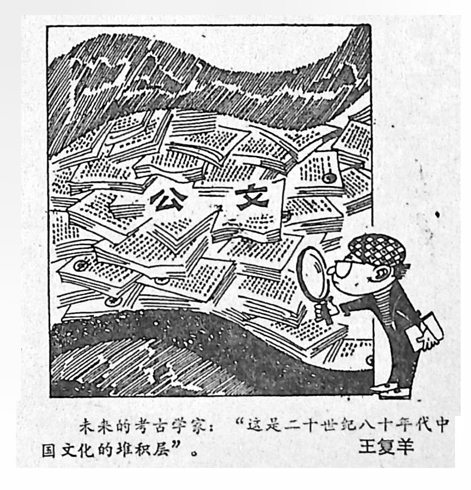

王复羊 《人事》1988年第2期（总第29期），第47页
未来考古
Archaeology of the Future
- Caption
- 未来的考古学家：“这是二十世纪八十年代中国文化的堆积层”。
An archaeologist of the future: “This is the cultural deposit of 1980s China.” - Text in the drawing
- 公文
Official documents - Description
- A cross-section of the earth: sandwiched between layers of soil is a thick stratum of stacked papers, one labeled “official documents.” A future archaeologist in a cap peers at it through a magnifying glass.
- Note
- 文山会海, “mountains of documents and seas of meetings,” was the standard complaint about 1980s bureaucracy. Wang Fuyang (1935–2001) was a well-known Beijing cartoonist.
- Artist
- Wang Fuyang 王复羊
- Published in
- 《人事》1988年第2期（总第29期）, p. 47
- Themes
- Paperwork and documents · Bureaucratism

Cite
Wang Fuyang, “未来考古” [Archaeology of the Future], Renshi (Personnel) 《人事》, 1988, no. 2, p. 47.